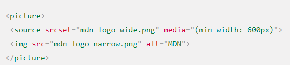
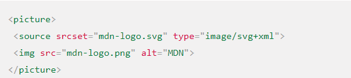

HTML-элемент <picture> служит контейнером для одного или более элементов <source> и одного элемента <img> для обеспечения оптимальной версии изображения для различных размеров экрана. Браузер рассмотрит каждый из дочерних элементов <source> и выберет один, соответствующий лучшему совпадению; если совпадений среди элементов <source> найдено не будет, то будет выбран файл, указанный атрибутом src элемента <img> . Затем выбранное изображение отображается в пространстве, занятом элементом <img>.
Чтобы выбрать оптимальное изображение, user agent анализирует атрибуты srcset, media, и type элемента
Элемент
Атрибут media позволяет определить медиавыражение, которое веб-браузер будет анализировать для выбора элемента <source>. Если медиавыражение определяется как ложное (false), то элемент <source> пропускается.
Атрибут type позволяет вам обозначить MIME-тип данных, указанных в атрибуте srcset элемента <source>. Если браузер не поддерживает данный тип, то элемент <source> опускается.
